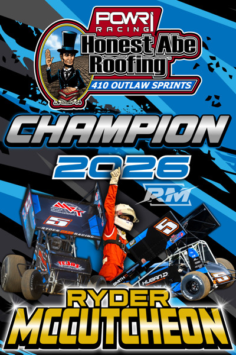

Ryder McCutcheon Wins 2026 POWRi 410 Outlaw Sprint League Championship
The Alamogordo, New Mexico, rookie took the title and Rookie of the Year honors with Huband Motorsports and RyderMac Racing, finishing 100 points ahead of Joe B. Miller.

Ryder McCutcheon won the 2026 POWRi Honest Abe Roofing 410 Outlaw Sprint League championship as a rookie, POWRi announced. The Alamogordo, New Mexico, driver also earned the league’s Rookie of the Year award in his first full season of 410 sprint car competition, driving for Huband Motorsports and RyderMac Racing.
The title was decided at the season-ending Deuces Wild weekend at Texas Motor Speedway Dirt Track, which closed Saturday, Nov. 7. McCutcheon set quick time in Thursday qualifying and started second in the Championship Night feature, finishing eighth as Blake Hahn led all 25 laps for the win. Read the Texas finale story.
In 24 feature starts, McCutcheon had two feature wins, two Quick Time awards, three heat race wins, one High Point Qualifier award, 64 laps led and a 7.7 average feature finish, according to POWRi. His first career POWRi 410 win came during the Road to the Hockett at Lucas Oil Speedway in June, and he won again at Humboldt Speedway on July 31. He also has a POWRi National Midget League feature win, giving him three career POWRi feature wins.
POWRi’s final standings, released Nov. 11, show 140 points separating the top three. Joe B. Miller of Millersville, Missouri, finished second with 5,520 points, 100 behind McCutcheon, and Xavier Doney of Odessa, Missouri, was third with 5,480. Three-time champion Ayrton Gennetten finished fourth with 5,230 points, and Landon Crawley was fifth with 4,540 in the Beaver Special.
The league drew 168 drivers across 28 completed events in 2026 despite seven rainouts, according to POWRi. Eleven drivers earned their first career league wins, including Jett Barnes, who became the youngest feature winner in series history at 15 years, three months and nine days with his Sept. 5 win at Lake Ozark Speedway.